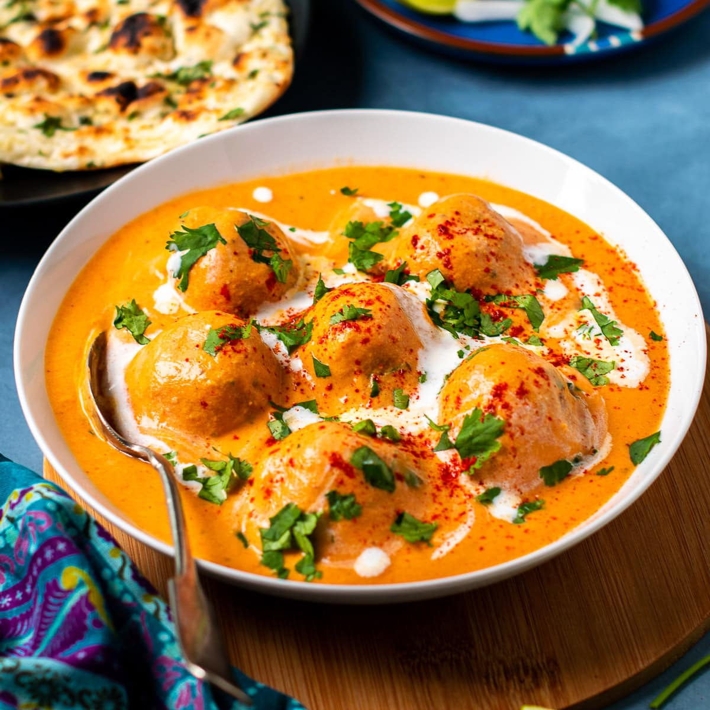

Malai Kofta Recipe
Updated: March 11, 2025, By Suganya

Ingredients & Substitutes
Boiled Potatoes:
Cook potatoes just until fork tender yet fully cooked. We don’t want mushy and water-logged potatoes because that makes the koftas too soft and they can break & fall apart while frying.Paneer:
You may use homemade or store-bought paneer. Both work well equally. Your homemade paneer (if using) should be completely drained and not contain any whey. Too much moisture in the paneer can again make the paneer koftas too soft. You may substitute paneer with pressed extra firm tofu.Corn flour:
Also known as corn-starch is used to bind the ingredients and give the koftas a crisp and firm texture. It can be substituted with arrowroot powder, sattu (powdered roasted gram/ chutney dal), or roasted gram flour/ roasted besan.Cashews:
Add a creamy texture to the malai gravy. They can be substituted with almond flour or nut butter. But the flavors will be slightly different. If you can’t eat nuts, simply use more heavy cream and cut down the amount of water.Heavy Cream:
Or whipping cream adds another layer of richness to the curry. You can omit it by using a little more cashews or adding 2 to 3 paneer cubes while blending the onions and tomatoes.
Preparation Method
- Boil and mash the potatoes.
- Mix mashed potatoes, paneer, corn flour, and spices to form a dough.
- Shape the dough into small balls and deep fry until golden brown.
- Prepare the gravy by sauteing onions, tomatoes, and spices.
- Blend the gravy mixture into a smooth paste and simmer.
- Add cream and cashews for richness.
- Serve the koftas with the prepared gravy.